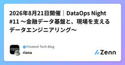
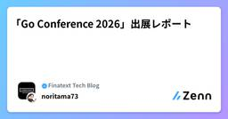

Finatext Tech Blogのフィード
https://zenn.dev/p/finatext
AI時代の金融インフラを提供するFinatextグループのテックブログです。
フィード

【エンジニア職】Finatextグループサマーインターン開催レポ -2026年-
Finatext Tech Blogのフィード
はじめにこんにちは、Finatextでエンジニアをしている國友です。Finatextグループでは、現場エンジニアが中心となって日々さまざまな施策を企画・実施しています。今回はその中でも目玉施策である、サマーインターンシップ - 2026 を開催したので、その模様を紹介します。このインターンも、新卒を含めた若手エンジニアが中心となって企画・運営しました。エンジニア就職を考えている学生の皆さんは、ぜひ今後の参考にしてください！なお、インターンプログラムの内容は、あくまで今年度のものとなります。今後内容が変更になる場合がありますので、あらかじめご了承ください。 エンジニアプ...
1日前

2026年8月21日開催｜DataOps Night #11 〜金融データ基盤と、現場を支えるデータエンジニアリング〜 1
1
Finatext Tech Blogのフィード
こんにちは！Finatextホールディングス/ナウキャスト 広報担当の及川です！2026年8月21日、ナウキャスト主催の勉強会「DataOps Night #11～金融データ基盤と、現場を支えるデータエンジニアリング～」をハイブリッド開催しました。第11回となる今回は、フェズ様、三菱UFJ信託銀行様、三菱UFJトラストシステム様をお迎えし、金融データ基盤におけるSnowflakeのセキュアな活用、AI時代の「コンテキスト自動管理」、データ利活用と機密保護の両立といった実践的な取り組みをお話いただきました。 発表内容 1.「クレジットビジネスプラットフォームのデータモデリングと...
3日前

「Go Conference 2026」出展レポート
Finatext Tech Blogのフィード
こんにちは！Finatext ソフトウェアエンジニアの @takuma5884rbb です。2026年9月11日（金）に中野セントラルパークカンファレンスで開催された「Go Conference 2026」に、Finatext ホールディングスはシルバースポンサーとして協賛し、ブースを出展しました。ブースの様子と、参加したセッションの感想をまとめます。 Go Conference 2026 とは？Go Conference は、一般社団法人 Gophers Japan が主催する、国内最大級の Go カンファレンスです。今年も多くの企業や個人が協賛しており、2 トラックのセッショ...
4日前
Cutting 39% Off Our Monthly Snowflake Pipeline Costs
Finatext Tech Blogのフィード
Hi, I'm Agnes, a data engineer at Nowcast.In this post, I want to share how we optimized our financial data pipelines in Snowflake to achieve a ~39% reduction in daily compute costs. Cost TrendDaily spend breakdown across two Snowflake environments. The red boxes denote specific rounds of s...
5日前

dbt と Snowflake と tag
Finatext Tech Blogのフィード
はじめにこんにちは！ナウキャストのデータエンジニアのけびんです。先日 Cross Data Platform Meetup #3 に登壇し、「dbt と Snowflake と tag」という内容についてお話しさせていただきました。https://speakerdeck.com/kevinrobot34/dbt-to-snowflake-to-tagイベント開催レポートも出していただいています。https://zenn.dev/kommy339/articles/68096c59269f79せっかくなので今回の登壇内容はブログとしてもまとめておこうと思います。 3種の...
9日前
Anthropic公式Go SDK(anthropic-sdk-go)でtool use / streamingを試す
Finatext Tech Blogのフィード
!Finatextグループは「Go Conference 2026」にシルバースポンサーで協賛しています！当社ブースで 「テックブログを見て来ました！」 とお伝えいただいた方には、もれなく当社のテックブック（物理本）を差し上げます！ はじめにAnthropic は Claude API 用の公式 Go SDK anthropic-sdk-go を公開しています。https://github.com/anthropics/anthropic-sdk-goリポジトリの examples/ 配下には動くサンプルコードが一通り揃っているので、それを元にコードを書き、手元で動かしてみ...
10日前
Go 1.27 の go doc package@version クエリを試す
Finatext Tech Blogのフィード
!Finatextグループは「Go Conference 2026」にシルバースポンサーで協賛しています！当社ブースで 「テックブログを見て来ました！」 とお伝えいただいた方には、もれなく当社のテックブック（物理本）を差し上げます！ はじめにジェネリックメソッドなど大きめの言語機能に注目が集まりがちですが、個人的に気になったのは日々の開発体験に効いてくる go doc の改善だったので、この記事ではそちらを紹介します。https://go.dev/doc/go1.27 go doc の package@version クエリこれまで go doc で特定バージョンのパッ...
11日前
DBが無応答になったとき、Goのアプリケーションはどこで詰まるのか
Finatext Tech Blogのフィード
!Finatextグループは「Go Conference 2026」にシルバースポンサーで協賛しています！当社ブースで 「テックブログを見て来ました！」 とお伝えいただいた方には、もれなく当社のテックブック（物理本）を差し上げます！はじめまして！Finatextでソフトウェアエンジニアをしている@takuma5884rbbです。我々が開発する金融サービスでは、大勢の顧客について処理を行う場面があります。あるとき、一つのバッチ処理がいつものような時間帯に終わらず、ログを見るとDB insertの途中で出力が止まっていました。バッチ処理自体は副作用のある部分は終わっており、止まっ...
12日前
go.mod の ignore ディレクティブを試してみた
Finatext Tech Blogのフィード
!Finatextグループは「Go Conference 2026」にシルバースポンサーで協賛しています！当社ブースで 「テックブログを見て来ました！」 とお伝えいただいた方には、もれなく当社のテックブック（物理本）を差し上げます！ はじめにGo 1.25 で go.mod に追加された ignore ディレクティブを試してみました。https://go.dev/doc/go1.25一言でいうと「go build ./... や go list all のようなパッケージパターンのマッチから、特定のディレクトリを除外できる」機能です。構文と挙動を確認したうえで、実際に手元で...
13日前
GopherCon 2026 in Seattle 参加記
Finatext Tech Blogのフィード
!Finatextグループは「Go Conference 2026」にシルバースポンサーで協賛しています！当社ブースで 「テックブログを見て来ました！」 とお伝えいただいた方には、もれなく当社のテックブック（物理本）を差し上げます！ はじめにFinatextのCreditドメインでエンジニアをしています、登石です。今回私は、8月の3日から6日までシアトルで開催されたGopherCon 2026に参加してきました。私にとって初めての海外カンファレンス参加でしたので、渡航前の準備から現地での体験までを振り返りつつ、GopherCon 2026の内容や感想をまとめます。 G...
17日前
AIにプロジェクト管理を任せるハーネスを作った
Finatext Tech Blogのフィード
導入こんにちは、ナウキャストでソフトウェアエンジニア・データサイエンティストをやっている隅田です。今回は、プロジェクト管理をAIエージェントに任せるために作ったハーネスの話をします。本記事を通じて、我々のチームでは、AIエージェントを用いて高品質かつ高速に開発を行っています。すると、開発以外のプロセスが相対的にボトルネックとして浮かび上がってくるようになりました。我々の場合、具体的には以下のようなPM/PdM業務（の一部）が重くのしかかるようになってきました。プロダクトに対する要求の起票や運用どういう優先順位でどういうユースケースが存在しているのか？開発計画の策定や...
19日前
AI に Slack の DM まで読ませていませんか
Finatext Tech Blogのフィード
こんにちは、ナウキャストで LLM エンジニアをしている Ryotaro です。AI エージェントに Slack を読み書きさせたい。でも「自分に見えているものが、DM まで含めて全部 AI にも見える」状態にはしたくない。Slack MCP の導入を検討して、ここで手が止まっていませんか？この記事は、Finatext グループのナウキャストの MCP ゲートウェイ基盤「MCPass」のシリーズ記事です。これまでに MCPass の技術構成と、AI に人間の Google アカウントを渡す代わりに AI 専用のサービスアカウント（SA）をユーザーごとに払い出す設計を紹介しました。h...
23日前
ドキュメントのコードを腐らせないCLIを作ってみた
Finatext Tech Blogのフィード
「いつの間にか動かなくなったサンプルコード」問題おそらくどんなプロジェクトでも、READMEや設計書、コード内のコメントにサンプルコードを書いているのではないかと思います。書いたときは完璧に意図通りになりますが、プロジェクトが変わっていく中で、いつの間にかサンプルコードがもう存在しない関数や型を使ったり、コンパイルが通らなくなったりしませんか？最初からタイプミスなどにより、間違っていた可能性も十分にあります。実際にLSPが参照できるわけではないので、チェックのしようがないかな、と思いきや、方法がありました。最も簡単な対策は、サンプルコードを全てExample関数に入れることです。...
25日前
Ai4カンファレンスに参加してきました
Finatext Tech Blogのフィード
こんにちは。FinatextのCredit事業部でエンジニアをしてます、岡本です。先日、米国ラスベガスで開催された世界最大級のAIカンファレンス Ai4 2026 に参加してきました。今回はその内容を書こうと思います。なお、内容は現地でのメモと録音をもとにまとめているので、細かい間違いや解釈違いがあったらすみません。また文中の用語は翻訳結果をそのまま意訳したものも含まれており、一般的な呼称でない場合もありますので、ご注意ください。 全体を通して感じたことまず大盛況でした。キーノート後は人が多すぎて最初のセッション会場への移動がとても大変でした。改めてAiに対する関心はこれまでに...
1ヶ月前
DMARC 集計レポートを Claude Code で分解して p=reject に到達するまで
Finatext Tech Blogのフィード
Finatextグループの証券会社である株式会社スマートプラスの保有するドメインについて、DMARC ポリシーの reject への移行を完了した。このドメインは既に様々な箇所からメールを送っている実績があるため、DMARC レコードを書き換えるだけでは済まない。本記事は、大量の DMARC 集計レポートを調査・分類し、運用可能な状態に落とし込むまでの記録である。なお、対象ドメインは example.co.jp と表記し、利用製品のベンダー名を含むホスト名・DKIM セレクタも仮名に置き換えている。 約 3,000 通の fail を分類する必要があった証券業界では、2025 年 ...
1ヶ月前
証明が通った。で、その仕様は正しいの？
Finatext Tech Blogのフィード
Finatextでバックエンドエンジニアをしている太宰です。普段は「BaaS (Brokerage as a Service)」という証券ビジネスプラットフォームを開発しています。Enabling Teamの活動の一環として「自動推論」技術について調査・検証を行っています。これまでにもいくつか記事を投稿していますので、自動推論シリーズのリストを参照いただければと思います。先日golang.tokyo#44にて「証明が通った。で、その仕様は正しいの？Goの形式検証ツール Gobra に decimal を検証させてみた」というタイトルで発表しました。この記事では発表の内容やその補足...
1ヶ月前
【イベントレポート】2026年8月4日開催｜DataOps Night 特別編〜AI時代のデータエンジニアリング！Local LLM 活用法
Finatext Tech Blogのフィード
こんにちは！Finatextホールディングス/ナウキャスト 広報担当の及川です！2026年8月4日、ナウキャスト主催の勉強会「DataOps Night 特別編～AI時代のデータエンジニアリング！Local LLM 活用法～」をハイブリッド開催しました。今回は、ナウキャストのData AI Service事業を牽引するメンバーが集結し、ローカルLLMをデータクレンジングや名寄せといった泥臭いデータOps基盤に組み込み、本番運用で月100万件・50億トークンものデータ処理を驚異的な低コストで実現している最前線の事例を共有しました。 発表内容 １．「ナウキャストにおける Data...
1ヶ月前
GopherCon 2026 Session Report 8/6
Finatext Tech Blogのフィード
こんにちは。デニスです。先週、米シアトルで開催された GopherCon 2026 に参加してきました。この記事では、最終日8/6のセッションレポートをお送りします。現地で書いた二日目のセッションレポートも、よろしければご覧ください。https://zenn.dev/finatext/articles/cddec190c6186b最終日も、朝からFinneran Ballroomでシングルトラックのトークが続き、暗号からコンパイラ、巨大モノレポの運用まで幅広いテーマが揃った一日でした。 The Go Cryptography State of the Union（Filip...
1ヶ月前
自作BIツール × DWHで挑むデータの民主化
Finatext Tech Blogのフィード
はじめにこんにちは！株式会社ナウキャストでデータエンジニアをしている浅宮です。普段は、グループ企業の株式会社スマートプラスクレジットが提供するクレジットインフラ「Crest」向けの分析基盤(DWH)を、Snowflake 上で構築・整備しています。この記事は、2026 年 5 月に行われた社内 AI コンテストに、Crest-BI×DWH という 4 名のチームで参加した体験記です。基盤を作るナウキャストメンバーと、業務システムである Crest を作るスマートプラスクレジットのエンジニアが一緒にチームを組み、「非エンジニアがDWH にGUIでクエリできる自作 BI ツール」 の...
1ヶ月前
GopherCon 2026 Session Report 8/5
Finatext Tech Blogのフィード
こんにちは。デニスです。私は今、GopherCon 2026 に来ています！今年は涼しいシアトルで開催され、日本の猛暑から逃れてきた身としては、それだけでもう来た甲斐があったと感じています。会場はダウンタウンにあるSeattle Convention CenterのSummitビルで、世界中からGopherが集まります。私自身、アメリカのGoカンファレンスに現地参加するのは今回が初めてです。去年はベルリンで開催されたGopherCon EUに参加しましたが、やはり本番のアメリカは規模が違います。一日目は、CTF、TinyGoのハッキングとワークショップに参加し、夕方からの懇親会では...
1ヶ月前